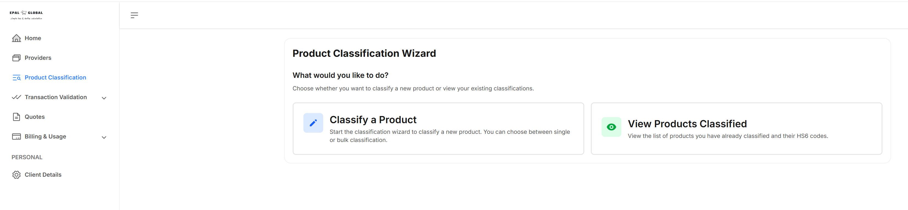

Product Classification UI
Use this UI to classify products and export the results.
Warning:
The results here are based on non-deterministic
logic. The Product Classification feature is intended to provide you with information
that you are responsible for verifying the correctness for your purposes. ePAL accepts
no liability for incorrect results.
To open this UI, click Product Classification on the side panel. The following UI is displayed:

Classifying Products
To classify a product, click Classify a Product. The product classification wizard is launched. You can classify products. For more information about how to use this, see Product Classification Wizard.
You can classify a single product. For more information, see Classifying a Single Product.
You can also classify a number of porducts in bulk. For more information, see Bulk Product Classification.
Existing Product Classifications
To view existing product classifications, click View Products Classified.
Exports
You can also export product classifications.